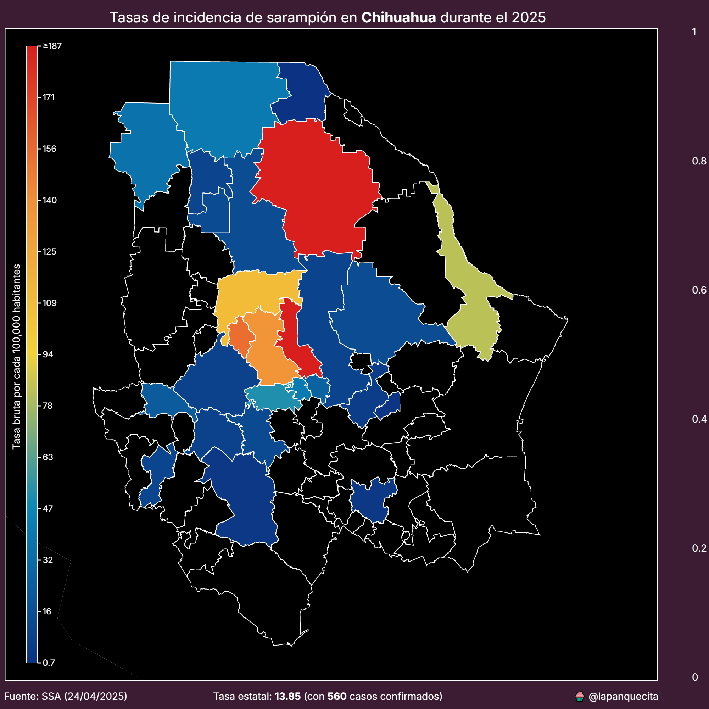

La historia de Darth Plagueis el Sabio.
Este becerro sabe lo que es bueno.
Biografía de Sor Juana Inés de la Cruz.
Visto en un cine popular de México.
Análisis sobre el gasto en salud pública del gobierno mexicano.

Análisis de la incidencia de sarampión en México durante el 2025.
Todos debemos hacer sacrificios.
Cuando el mundo estuvo a nade de la guerra nuclear.
El hermano esotérico del MKULTRA.
Análisis de la situación hídrica en el estado de Sinaloa.
La gota que derramó el vaso.
Crimen y castigo.